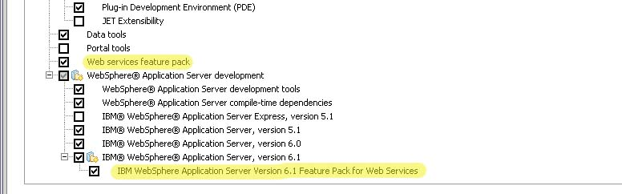

<?xml version="1.0" encoding="ISO-8859-1" ?>
<!DOCTYPE html PUBLIC "-//W3C//DTD XHTML 1.0 Strict//EN"
    "http://www.w3.org/TR/xhtml1/DTD/xhtml1-strict.dtd">
<html xmlns="http://www.w3.org/1999/xhtml" lang="en" xml:lang="en">

      <body id="body" class="viewbody">

<div id="box-model-hack">
<div id="content">

<!-- h1 class="access">Start of content</h1 -->
<!-- start content head -->
  <div id="content-head">
   <div id="page-top">
  </div><!-- end page-top -->
   <div class="hrule-dots" id="skipnav">&nbsp;</div>

</p>
<!-- stop content head -->
<!-- start main content -->
<div id="content-main">
 
 <div>
<h1 class="heading-1"><span id="HbankingProxyClient">bankingProxyClient Sample Readme</span></h2>
     <p id="date-stamp">Updated on      11 September 2008
 </p>
<h2 class="heading-1-1"><span id="HOverview">1 Overview</span></h3>
This project interchange contains a set of sample projects developed from "JAX-WS client APIs in the Web Services Feature Pack for WebSphere Application Server V6.1, Part 2: Creating a proxy client" by Dan Sedov and Nikhil Thaker.  It was developed in, and exported from Rational Application Developer (RAD) 7.0.0.7.

<br><br>
This project interchange contains three projects: a JAX-WS service and two JAX-WS clients.  The two JAX-WS clients are a server-based and a thinclient both developed from the previously mentioned Developerworks article.  The server-based client and thinclient are functionally equivalent.
<h2 class="heading-1-1"><span id="HResolvingproblems">2 Resolving problems</span></h3>
When you first load this project interchange, you will probably get at least one red X problem.  If your RAD is properly set up for JAX-WS development, you'll probably only get one red X.  If you intend to only run the server-based client, you can ignore the red X on the bankingProxyThinclient.  If you get the red X on the bankingProxyThinclient and wish to resolve the problem, then follow the steps in Appendix A.
<br><br>
If you get a LOT of red X's, your RAD probably isn't set up for JAX-WS development.  Refer to Appendix B to resolve this issue.
<br><br>
<h2 class="heading-1-1"><span id="HSetup">3 Setup</span></h3>
<h3 class="heading-1-1-1"><span id="HUpdatetheclientcodetousethecorrecthost2Fport">3.1 Update the client code to use the correct host/port</span></h4><p class="paragraph"/>
As in the Developerworks article, the target server/port is hardcoded in the java code.  In order for the clients to run successfully, you'll need to make the following updates o the code in the J2EE perspective in RAD:

<ul class="star">
<li>For the server-based client:<ul class="star">
<li>bankingProxyClient->Java Resources->src->com.example.client</li>
<li>open BankingClient.java</li>
<li>edit the URL on line 22 to use the correct host/port</li>
<li>save and exit the file</li>
</ul></li>
<li>For the thinclient:<ul class="star">
<li>bankingProxyThinclient->src->com.example.client</li>
<li>open BankingClient.java</li>

<li>edit the URL on line 18 to use the correct host/port</li>
<li>save and exit the file</li>
</ul></li>
</ul><h3 class="heading-1-1-1"><span id="HAddatargetservertotheworkspace">3.2 Add a target server to the workspace</span></h4><p class="paragraph"/>
If you don't already have a target server in your workspace with the Web Services Feature Pack installed, you'll need to add one:
<ul class="star">
<li>File->New->Other->Server->Server<ul class="star">
<li>Type in the target server's host name, Next</li>
<li>Click on SOAP for the admin port and ensure the port number is correct, Next</li>
<li>Finish</li>

</ul></li>
</ul><h2 class="heading-1-1"><span id="HDeploytheapplicationstotheserver">4 Deploy the applications to the server</span></h3>
Deploy the banking service and server-based client to the server:
<ul class="star">
<li>In the servers pane, right click on the server->Add Remove Projects</li>
<li>Select bankingEAR</li>
<li>Click Add</li>
<li>If you want to run the server-based client:<ul class="star">
<li>Select bankingProxyClientEAR</li>

<li>Click Add</li>
</ul></li>
<li>Finish</li>
</ul><h2 class="heading-1-1"><span id="HRunningtheserverbasedclient">5 Running the server-based client</span></h3>
To run the server-based client, do the following in the J2EE perspective:
<ul class="star">
<li>In the Project Explorer, expand bankingProxyClient->WebContent->sampleAccountsPortProxy</li>
<li>Right click on TestProxy.jsp->Run As->Run on server</li>
<li>Select the server on which you had deployed bankingProxyClientEAR</li>

<li>Finish</li>
<li>The following should display in a RAD browser window:</li>
</ul><div class="code"><pre>Account number 1928357087963725165, Account belongs to Joe Customer, Account balance is 10.0</pre></div>
<h2 class="heading-1-1"><span id="HRunningthethinclient">6 Running the thinclient</span></h3>
<h3 class="heading-1-1-1"><span id="HSettinguptherunconfiguration">6.1 Setting up the run configuration</span></h4>
<ul class="star">
<li>In the J2EE perspective in the Project Explorer, expand bankingProxyThinclient->src->com.example.client</li>
<li>Right click on BankingClient.java->Run As->Run...</li>

<li>Single click on Java Application</li>
<li>Click the 'New' icon</li>
<li>Arguments tab<ul class="star">
<li>Add the following to the VM arguments section:</li>
</ul></li>
</ul><div class="code"><pre>&#45;Djava.util.logging.manager=com.ibm.ws.bootstrap.WsLogManager
&#45;Djava.util.logging.configureByServer=<span class="java&#45;keyword">true</span></pre></div>
<h3 class="heading-1-1-1"><span id="HRunthethinclient">6.2 Run the thinclient</span></h4>
<ul class="star">
<li>Click Run</li>
<li>The following should display in the Console tab:</li>

</ul><div class="code"><pre>Account number 8596198807717129639
Account belongs to Joe Customer
Account balance is 10.0</pre></div>
<h2 class="heading-1-1"><span id="HAppendixAResolvingthe27WAJAXWSTHINCLIENT27notdefinedcompileproblem">Appendix A - Resolving the 'WAS_JAXWS_THINCLIENT' not defined compile problem  </span></h3>
<ul class="star">
<li>In the J2EE perspective, right click on bankingProxyThinclient->Properties</li>
<li>Java Build Path->Add Variable->Configure Variables->New<ul class="star">
<li>Name: WAS_JAXWS_THINCLIENT<ul class="star">
<li>Click File<ul class="star">
<li>Browse to the directory in the base_v61 "runtimes" directory in rad: (rad_home)/runtimes/base_v61/runtimes</li>

<li>Select com.ibm.jaxws.thinclient_6.1.0.jar</li>
<li>Open</li>
</ul></li>
<li>OK, OK, OK</li>
</ul></li>
</ul></li>
</ul><h2 class="heading-1-1"><span id="HAppendixBDeterminingifJAXWSisenabledinRAD">Appendix B - Determining if JAX-WS is enabled in RAD</span></h3>
<h3 class="heading-1-1-1"><span id="HCheckforJAXWSFunctionality">B.1 Check for JAX-WS Functionality</span></h4><p class="paragraph"/>

In RAD, do the following:

<ul class="star">
<li>Window->preferences->Web Services->WebSphere->JAX-WS Code Generation<ul class="star">
<li>Under <strong class="strong">Top Down</strong>, Check "Copy WSDL into project"</li>
<li>Under <strong class="strong">Bottom Up</strong>, Check "Generate WSDL into the project"</li>
<li>OK</li>
</ul></li>
</ul>
Note that if you don't see a JAX-WS Code Generation selection here (only JAX-RPC Code Generation) this probably means that you don't have the Web Services Feature Pack applied to the WebSphere 6.1 runtime that is embedded within RAD.  
<br><br>

You can check for the Web Services Feature Pack on your RAD WebSphere 6.1 installation by checking for the following directory:  (rad_home)runtimes/base_v61/profileTemplates/WEBSERVICES.  If this directory doesn't exist, then you will need to apply the Web Services Feature Pack to this installation of WebSphere 6.1.  
<br><br>
First, you'll need to check for RAD 7.0.0.6.
<br><br>
<h3 class="heading-1-1-1"><span id="HInstallRAD7006orlater">B.2 Install RAD 7.0.0.6 or later</span></h4><p class="paragraph"/>

If you need to apply the Web Services Feature Pack to your RAD WebSphere 6.1, then you must first ensure that your RAD is at least 7.0.0.6 (look at Help->About Rational Application Developer from within a workspace).  If it isn't at least 7.0.0.6, update it with the Installation Manager:
<ul class="star">
<li>Start->Programs->Installation Manager->Installation Manager</li>
<li>Update Packages</li>
<li>Check Update all</li>
<li>Next</li>

<li>Follow the prompts until RAD7 is updated to the latest level</li>
</ul><br>
<h3 class="heading-1-1-1"><span id="HAddtheWebServicesFeaturePacktoyourRADenvironment">B.3 Add the Web Services Feature Pack to your RAD environment </span></h4><p class="paragraph"/>

To add Web Services Feature Pack to your RAD environment, use the IBM Installation Manager:
<ul class="star">
<li>Start->Programs->Installation Manager->Installation Manager</li>
<li>Modify Packages</li>
<li>Select IBM Software Development Platform</li>
<li>Next</li>
<li>Next</li>

<li>Make the following selections highlited in yellow, then select Next, then Modify:</li>
</ul><br>

<br><br>
<h3 class="heading-1-1-1"><span id="HEnablewebservicesfeaturepackprojectfacetinRAD">B.4 Enable web services feature pack project facet in RAD</span></h4><p class="paragraph"/>

When working with a JAX-WS enabled project, it is necessary to enable the proper projects, or else you will encounter errors, if this hasn't been done already (you can check this by observing the project facets for your project), then follow these steps:
<ul class="star">
<li>Open RAD7 in the appropriate workspace.</li>
<li>Right-click on the project</li>
<li>Select "Properties"</li>
<li>Select "Project Facets" from the left pane</li>

<li>Click "Add/Remove Facets..." button</li>
<li>Click on "WebSphere 6.1 Feature Pack for Web Services" checkbox</li>
<li>Click on Finish</li>
<li>Click on OK</li>
</ul>
</div>
</body>
</html>
